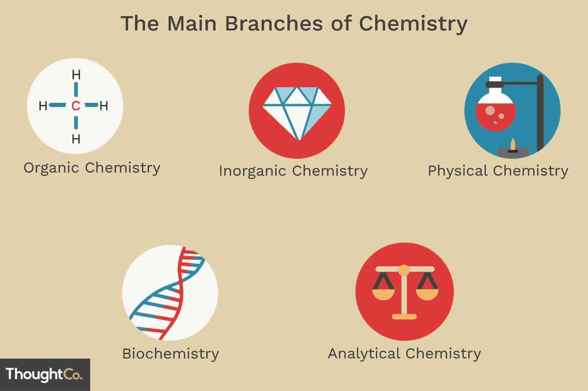
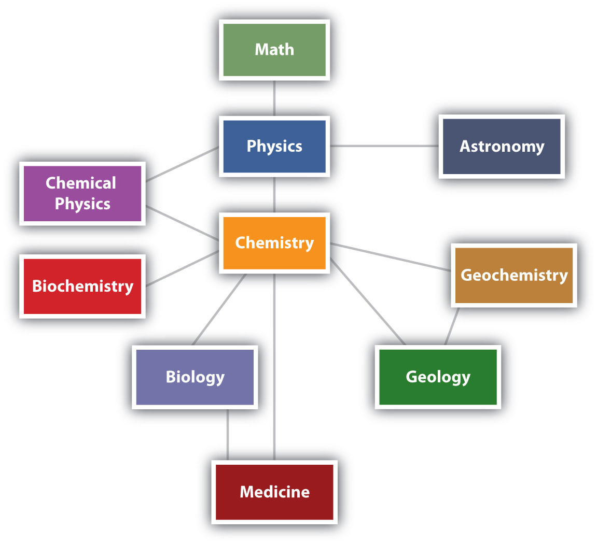

Hemija se kao nauka razvila u izuzetno široku disciplinu, zbog čega je podijeljena na nekoliko glavnih grana kako bi se lakše istraživao ogroman i raznovrstan svijet materije. Iako su sve ove oblasti duboko isprepletene i često se preklapaju, svaka od njih koristi specifične metode i pristupe kako bi objasnila različite aspekte prirodnih i vještačkih supstanci. Razumijevanje ovih grana omogućava nam da uočimo kako hemija utiče na sve oko nas, od mikroskopskih procesa u živim ćelijama do stvaranja novih materijala i tehnologija.Organska hemija je grana koja se bavi proučavanjem jedinjenja na bazi ugljenika, elementa koji ima jedinstvenu sposobnost da formira stabilne lance i prstenove sa drugim atomima. Ova disciplina je ključna za razumijevanje samog života, jer su proteini, ugljeni hidrati, masti i DNK u osnovi organski molekuli. Nasuprot njoj, neorganska hemija proučava sve ostale elemente iz periodnog sistema i njihova jedinjenja koja uglavnom ne sadrže ugljenik-vodonik veze. Ona obuhvata istraživanje metala, minerala, keramike i poluprovodnika koji su osnova građevinske i elektronske industrije.
Fizička hemija predstavlja spoj fizike i hemije, a fokusira se na proučavanje fizičkih osobina molekula i zakona koji upravljaju hemijskim reakcijama. Ona istražuje kako energija putuje i kako se transformiše tokom reakcija, kojom brzinom se ti procesi odvijaju, kao i kako se supstance ponašaju na kvantnom nivou. S druge strane, analitička hemija je disciplina koja se bavi identifikacijom i kvantifikacijom sastava materije. Koristeći napredne laboratorijske instrumente, analitički hemičari precizno utvrđuju koja se tačno supstanca nalazi u nekom uzorku i u kojoj količini, što je ključno za kontrolu kvaliteta hrane i ljekova.
Kada se hemijski principi primijene na žive organizme, ulazimo u domen biohemije,
nauke koja predstavlja direktan most između hemije i biologije. Ova disciplina detaljno istražuje složene hemijske
reakcije koje se svake sekunde odvijaju unutar ćelija biljaka, životinja i ljudi. Biohemija nastoji da objasni
kako se hrana koju unosimo transformiše u energiju kroz metabolizam, kako se genetske informacije prepisuju i prenose,
te na koji način enzimi upravljaju svim vitalnim funkcijama u tijelu.
Razumijevanje biohemijskih procesa postalo je temelj moderne medicine, farmacije i biotehnologije.
Proučavanjem poremećaja na molekularnom nivou, naučnici mogu da otkriju uzroke mnogih bolesti i da razviju ciljane
terapije i ljekove. Takođe, ova oblast omogućava napredak u genetskom inženjeringu i poljoprivredi, otvarajući vrata
za proizvodnju otpornijih usjeva i inovativnih medicinskih tretmana koji direktno spašavaju ljudske živote.
Znanja stečena kroz različite hemijske oblasti nalaze direktnu primjenu u industriji i tehnološkom razvoju bez kojeg
bi savremeni život bio nezamisliv. Hemijska industrija transformiše sirovine poput nafte, prirodnog gasa, vazduha,
vode (H2O), metala i minerala u više od 70.000 različitih proizvoda. Ovi proizvodi prožimaju svaki segment našeg dana, od
pametnih telefona i baterija, preko ekoloških premaza, pa sve do tekstila i naprednih građevinskih materijala.
Pored tehnološkog napretka, hemija ima presudnu ulogu u rješavanju globalnih izazova današnjice,
kao što su očuvanje životne sredine i održivi razvoj. Kroz razvoj zelene hemije, naučnici nastoje
da dizajniraju hemijske proizvode i procese koji smanjuju ili potpuno eliminišu upotrebu i stvaranje
štetnih supstanci. Na taj način, hemija ne samo da pokreće modernu ekonomiju, već nudi i rješenja za prečišćavanje
vode, reciklažu otpada i prelazak na obnovljive izvore energije, obezbjeđujući bolju budućnost za planetu.
Hemija se s pravom naziva centralnom naukom jer premošćuje jaz između fundamentalnih zakona fizike i složenih mehanizama biologije. Dok fizika proučava osnovne sile i čestice, a biologija složene žive sisteme, hemija se nalazi tačno u sredini — ona objašnjava kako se te čestice spajaju u molekule koji omogućavaju postojanje samog života. Bez hemijskih zakona o vezivanju i energiji, bilo bi nemoguće razumjeti ni kako funkcioniše jedna živa ćelija, niti kako nastaju složeni kosmički objekti.

U savremenoj nauci granice između disciplina postaju sve bleđe, što dovodi do rađanja novih, hibridnih oblasti. Naučnici danas kombinuju hemiju sa geologijom (geohemija) kako bi razumjeli unutrašnjost Zemlje, ili sa astronomijom (astrohemija) u potrazi za tragovima života na drugim planetama. Ova međusobna povezanost dokazuje da hemija nije izolovana disciplina, već univerzalni jezik prirode koji nam pomaže da dešifrujemo tajne univerzuma na svim nivoima.
Korišćeni izvori:
https://sh.wikipedia.org/wiki/Hemija
https://stari.svethemije.com/grane-hemije.html
https://chem.libretexts.org/Bookshelves/Introductory_Chemistry/Introductory_Chemistry_%28LibreTexts%29/01%3A_The_Chemical_World/1.07%3A_The_Scope_of_Chemistry
https://trellis.net/article/will-legacy-issues-capture-chemical-industrys-future/
https://www.thoughtco.com/the-5-branches-of-chemistry-603911